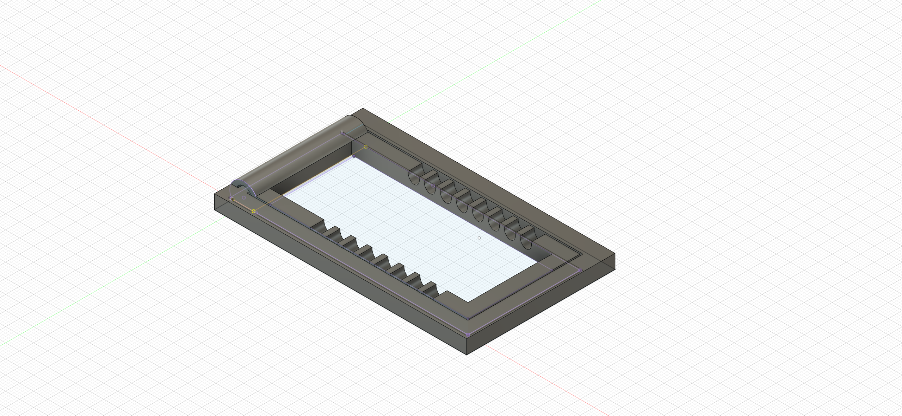

The weeks go by, more stuff I try, the more things I conjure in my mind
Click Below to see the projects I have done over the few weeks
Week 1
Safety, 3D printing and Laser Cutting Quizzes
Weeks 2 and 3
CSS, HTML, GitHub and a migraine
Week 4
Raster, Vector, Fusion 360, CAD and all things 2D
Week 5 & 6
3D Modelling And Printing Processes
Week 7
Computer Controlled Cutting aka Laser Cutting
Week 12
Basic Electronics and TinkerCAD
Week 13
Controlling Input-Output Devices in Arduino UI
Week 14
Intermediate Input Output Sensors and Devices
Week 15, 16, 17, 18
Final Project - Enjoy this caffine fueled rush
Week 1
Safety, 3D printing and Laser Cutting Quizzes
In the first week of my fabrication skills module, we started by completing a safety quiz for operating tools in the fabrication lab. The quiz required us to watch videos about the rules and emergency procedures for different situations that may arise while working in the lab. The videos covered some basic rules for working in the workshop, such as tying up long hair, not wearing loose items, and wearing appropriate clothing and shoes. We also had to complete quizzes for handling 3D printers and laser cutters, which covered etiquette and rules for using the machines. For laser cutting, we were reminded to come prepared, not book on behalf of others, and verify that the compressed air and exhaust are turned on, as well as to actively watch the laser cutter at all times due to the risk of fire.
Overall, the first week was focused on safety and ensuring that we had the necessary knowledge to navigate the facilities provided. While some of the rules and procedures may seem basic, they are essential for working safely and effectively in the lab. Completing the quizzes and certifications for the different machines also helped to ensure that we were capable of handling them properly and minimizing the risk of accidents or damage.
Over the past two weeks, we have covered HTML and CSS, which will be utilised in the creation of websites. Initially, I faced some challenges as this was my first time coding a website with HTML and CSS, but as the lessons progressed and with the aid of online tutorials, I was able to comprehend the design principles and techniques. The concept of <> tags was novel to me, but I was able to grasp it, which aided me in debugging my code.
In addition to HTML and CSS, I learnt to use GitHub, a code hosting platform for version control and collaboration, which enables individuals to work together on projects from any location. The tutorial provided covered the essential aspects of GitHub such as repositories, branches, commits, and pull requests. This was the platform I utilised to host the website we designed during the lesson plan. We employed a template by Jake Wright, which taught me the formatting and workflow of the typical process of creating a website using HTML and CSS, from ideation to implementation.
This week, I spent a lot of time working on design projects for my DFAB module. I was initially struggling to use Gimp to remove backgrounds from images for my logo design project, but after watching a few tutorial videos and practicing, I started to get the hang of it. It took a lot of patience and attention to detail, but I was finally able to remove the background from my chosen image and create a transparent image that I could use for my logo. I found it challenging at first, but I was ultimately able to complete the task and am proud of the results.
After completing the logo project, I moved on to using Inkscape to design a logo for my name tag. This was a little easier for me as I had some previous experience using Inkscape, but I still faced some difficulties with creating the design I had in mind. However, with some trial and error, I was able to create a unique and personalised logo that I was happy with. Finally, I used Fusion 360 to design the actual name tag. This was a new program for me, so I had to take it slowly and watch some tutorials, but after some practice, I was able to design a name tag that incorporated my logo and looked professional. Overall, I feel like I learned a lot today and am excited to continue developing my design skills throughout the module.
We learned how to use the revolve function in Fusion 360 to design 3D models such as a name tag, a Lego brick, and a mug. The lesson also included designing a bolt, which required the thread tool to create precise threads on the bolt's body. Then we were tasked with a graded assignment to create a unique design for a knight chess piece, which was challenging but with some help from our instructor and online resources, we successfully completed the task. We also had the opportunity to design a phone stand holder of our choice, which was a fun and creative project that allowed us to exercise our skills in 3D modeling and design.
We were given the creative freedom to design a phone stand holder of our own choice using Fusion 360. Initially, we found it challenging to come up with a unique design that was both functional and visually appealing. However, as we progressed, we became more confident in using the different tools and functions within the software. The project allowed us to experiment with various shapes and designs and ultimately created a holder that we were proud of. This project not only allowed us to exercise our creativity but also helped us develop our skills in 3D modeling and design.
We were given the task of designing a jewelry box holder, drawing inspiration from a treasure chest. The design had to incorporate finger joints and living hinges, which presented a unique challenge in terms of functionality and aesthetics. After creating sketches and 3D models, we finalized the design and exported the drawings as a DXF file.
The next step was to import the file into CorelDRAW, the application used for laser cutting. Using this software, we were able to adjust the parameters of the design to ensure that the laser cutter could cut the material accurately. It was a delicate process, and we had to be precise with our measurements to ensure that the finger joints and living hinges fit together perfectly. Overall, the project was a great opportunity to apply our knowledge of 3D modeling and laser cutting in a practical and creative way, and I'm pleased with the final product.
Tthe jewelry box holder was a challenging yet fulfilling experience. It required us to think creatively and incorporate functional design elements, such as finger joints and living hinges, to ensure that the final product was both aesthetically pleasing and practical.
During the introduction to Basic Arduino electronics and TinkerCAD simulation, we learned about the proper voltages and currents required for Arduino systems. We used TinkerCAD to run simulations and test our designs, which was an effective way to learn about the various components and their functions. The process was interactive and engaging, allowing us to understand the practical aspects of building circuits and using Arduino systems.
Although the simulations were helpful, I struggled with coding a simple loop at first. It was challenging to get the syntax and structure correct, but with the guidance of our instructor and some online resources, I was eventually able to understand the basics of coding. As the lesson progressed, we were able to apply the coding skills we learned to control LED lights and other components in our circuit designs. Overall, the introduction to Basic Arduino electronics and TinkerCAD was a valuable learning experience, and I gained a better understanding of electronics and coding.
Today, I had my first experience using the Arduino interface to code input-output devices. Initially, I felt overwhelmed with the amount of information presented on the interface, but my instructor guided us through each step of the process. We learned how to connect various components, such as LED lights, resistors, and a breadboard, to the Arduino board. We then used the Arduino IDE to code simple programs that would control the components and output signals based on certain inputs.
As we progressed through the lesson, I began to appreciate the power and versatility of the Arduino platform. We were introduced to the numerous libraries available to interface with specific components, such as the Servo library for controlling servo motors and the LiquidCrystal library for displaying text on an LCD screen. By using these libraries, we were able to quickly and easily incorporate complex functionality into our projects. I was excited to see the possibilities for using Arduino in various applications, from robotics to home automation, and I'm looking forward to exploring these further in future lessons.
This week in my Arduino electronics module, we continued our exploration of intermediate sensors, such as switches and ultrasonic sensors. We learned about how switches can be used to control circuits and how they can be connected to an Arduino board to detect the state change. We also explored ultrasonic sensors and how they can be used to measure distances, which is a useful capability for many applications. We had the opportunity to work with both of these sensors, learning how to properly wire them to the Arduino board and how to write the necessary code to make them function.
For our assignment this week, we were tasked with writing a code for the switch using various parameters such as debouncing, to ensure the switch responds correctly to user input. This was a challenging task that required us to carefully consider the various parameters and how they would affect the switch's behavior. We also had to think about how the switch could be used in practical applications and how the code we wrote could be modified to suit different needs. By the end of the week, we had a better understanding of how to use switches and ultrasonic sensors in our projects, and how to write effective code to control them.
For my final project in the fabrication skills module, I decided to create a distance sensor that would help me maintain a healthy distance from my computer screen. I used an ultrasonic sensor to measure the distance between myself and the screen, and an Arduino board to process the data and control the output. The output was an addressable light strip that would change colors based on the proximity of my body to the screen.
The project was a challenging yet rewarding experience. It required me to apply all the skills that I had learned throughout the module, including 3D design, laser cutting, and electronics. I had to carefully design and assemble the housing for the sensor, ensuring that it would be stable and secure when mounted on my desk. Additionally, I had to write the code for the Arduino board, which involved configuring the ultrasonic sensor and programming the light strip to change colors based on the distance readings. In the end, I was pleased with the result and felt that the project demonstrated my ability to combine different fabrication skills to create a functional and practical device.
Week 1 – Safety, 3D printing and Laser cutting quizzes
I took a safety quiz on operating tools in the fabrication lab, which required us to watch provided videos covering the rules and emergency procedures for different situations that may arise while working in the lab. The videos explained the basic rules one should follow while working in the workshop, such as tying up long hair, not wearing loose items like hanging necklaces, wearing short-sleeved shirts, keeping hands free of adornments like loose bracelets, wearing long pants, and covered shoes. The videos also went over the use of placards to indicate hazards and safety concerns at different machines.
In addition to safety, we were also required to watch and answer quizzes to determine if we were allowed to handle the 3D printers and laser cutters at the fablab. The 3D printing quiz covered etiquette when using the 3D printers, such as a maximum of three hours per timeslot per student per week. The laser cutting quiz went over rules like coming to the laser cutter ready to cut, never booking on behalf of friends, and verifying that compressed air and exhaust are turned on, especially air assist. The physical F2F certification for laser cutting was done at the fablab, where all laser cutters are located adjacent to the T11Squared sheltered open area. Students must actively watch the laser cutter at all times due to the potential risk of the material catching fire.
Week 2 & 3 – HTML, CSS, GitHub For Website
These 2 weeks we covered HTML as well as CSS, this will be used when we are creating our websites. Initially I was stuck as this was my first time coding a website using html and CSS but as the lesson progressed and following the online tutorial, I managed to understand the design principles and methods. The use of <> and </> was new to me but was something I understood well which helped me in debugging my code.
Along with HTML and CSS, I learned to use gitHub, a code hosting platform for version control and collaboration. It lets you and others work together on projects from anywhere. This tutorial teaches you GitHub essentials like repositories, branches, commits, and pull requests. This is what I used ultimately to host the website we designed during the lesson plan. We used a template from ‘Jake Wright’ which taught me the formatting and workflow of a typical process from thinking to creating a website using HTML and CSS.
Coming from an engineering principle, it was hard to pick up this new skill as my advantages lie in math and at most software’s to calculate different equations. Never to the extent of using these languages exclusively to create something such as a website. With the help of websites such as w3schools and various YouTube Tutorials, I managed to figure out the basics of a website. At the time of writing, I am using the Jake Wright’s template, but I intend to change it to a more aesthetic looking format.
We also were taught to use GitHub and its
extension Git. We were tasked to upload our files and convert the files to a
website hosted by GitHub by the means of GitPages. I found this feature
very interesting as I am able to take any source code in HTML and CSS from any
website and host it using this feature.
Since we are using HTML, I can use google
inspect to inspect a page and its HTML code to ‘draw inspiration’ or loosely
copy a websites design and changed to my liking. I can therefore create
websites for free without paying for hosting.
Week 4 - Raster, Vector, Fusion 360, CAD and all things 2D
Raster
Vector
Before
Photo taken on the ITE Rooftop
After
I removed the background and reduced the contrast so shadows were not so dark
Inspiration
These were some drafts I did for my website's and personal logo
Final Logo
This was the design I ultimately settled on which became my first ever personal logo
Class Exercises
Press - Fit Laptop Stand
Sample Title
Sample Text
Sample Title
Sample Text
Week 5 & 6 - 3D Modelling And Printing Processes
All 7 CAD class exercises
Phone Stand Assignment
Sample Title
Sample Text
Sample Title
Sample Text

Week 7 - Computer Controlled Cutting
Laser cutting derives its name from the acronym "laser," which stands for Light Amplification by Stimulated Emission of Radiation. A powerful laser beam is used to melt, burn, or vaporize materials, and optics such as mirrors and lenses focus the laser beam onto the surface of the material. This non-contact, thermal-based fabrication process is suitable for a wide range of materials, including wood, glass, paper, metal, plastic, and gemstones, and it can produce intricate parts without requiring custom-designed tools.
Laser cutter systemThis also serves as a guide for the order of equipments to switch on.
Computer: Instructions are sent from here to the laser cutter. (usually a software is required) Laser cutters: This machine receives instruction from the PC to cut the designs. Smoke/Fume Extractor: A safety equipment to prevent accumulation of smoke and gases in the laser cutter. The contaminated air passes through the Carbon and HEPA filter to remove unpleasant odours and microparticles. Air compressor: A safety equipment that acts as air assist to blow the laser path clear of smoke and debris. Laser cutters in SP:
Factors to consider
Chamfers and joints - A chamfer is a corner beveled at a 45-degree angle and is created by placing a three-cornered piece of material at a 90° joint, mainly to provide reinforcement especially if the model is large. A chamfer can also mean rounding an edge to reduce the sharpness. Creating t-slot joints allows pieces to interlock and secure in place without the need to weld or attach joints using other methods. Once in place, fasteners, nuts, locks and other items are then used to hold the pieces together. When designing, chamfers and joints can be considered.
Kerf - The laser burns away a portion of material when it cuts through. This is known as the laser kerf and ranges from 0.08mm – 1mm depending on the material type and other conditional factors. Besides the material properties and thickness, the focal length of the lens and pressure of compressed air have an impact too. We should take kerf into consideration if we need fine details or making press fit models. To do so, we will add (for protruding parts) or substract (for holes/inward surfaces) the kerf width from our component dimensions.
Parametric design - As mentioned in previous page briefly, parameters are used to make structures of the same features but different thickness, length or height. With just 1 change to one parameter, all the other dimensions be adjusted accordingly. That saves a lot of time to redesign again.
Things to take note:
Ensure that the compressed air and exhaust are turned on.
After cutting, the enclosure lid must be remain closed for at least 30 - 40 seconds to allow for smoke and fumes to be exhausted.
Always watch the whole cutting process in case there might be fire break outs.
Keep the work area clean of unwanted materials and debris. A buildup of cutting and engraving residue and debris is dangerous and can create a fire hazard.
If laser cannot cut through the material despite increasing the power by 5%, the lens could be dirty. Notify the staff instead of continuing as it may cause damage to the lens. Source: FABLAB@SP (Blackboard)
Jewelry Box - Treasure Chest
Sample Title
Sample Text
Jewelry Box - Treasure Chest
Sample Title
Sample Text
Sample Title
Sample Text
Week 12 - Basic Electronics and TinkerCAD
Embedded Programming involves a computer system designed to carry out a specific task as part of a larger system. This is commonly found in devices such as smart TVs and rice cookers.
The Arduino platform is an open source system that includes both software and hardware components. The software tools include an Integrated Development System (IDE), an Arduino programming language similar to C++, development and debugging tools based on Processing, and open source software libraries. Meanwhile, the hardware consists of an ATMel processor board, shields or add-on modules, and various sensors, actuators, and peripherals.
Using Arduino offers several benefits, including its affordability, cross-platform compatibility, user-friendly programming environment with a graphical user interface, and the ability to expand its capabilities with open source and customizable software and hardware components.
This Weeks assignment
Week 13 - Controlling Input-Output Devices in Arduino UI
Tinkercad is an excellent tool for designing and testing circuits, especially for beginners. It provides a virtual environment where users can build, test and refine their circuits without the need for physical components. This saves time and money as users can identify and correct any errors in their circuit design before actually building it.
In addition to its circuit design capabilities, Tinkercad also offers 3D modeling tools. Users can create and edit 3D models, and even 3D print their designs. This makes it a versatile tool for makers and designers who want to create physical objects.
Overall, Tinkercad is an excellent resource for anyone interested in learning about electronics, circuit design, and 3D modeling. Its intuitive interface, extensive component library, and simulation capabilities make it an ideal platform for beginners
This Weeks assignment
Week 14 - Intermediate Input Output Sensors and Devices
During this week, I decided to create a mock-up of the final circuitry for my project to ensure that it would work correctly. Using Tinkercad, I was able to design and test my circuit without the need for physical components. This was a significant advantage as it allowed me to identify any errors in my design and make corrections before building it.
Tinkercad was particularly useful in helping me visualize the various parts of my circuit. I was able to experiment with different components, such as LEDs, switches, and resistors, to see how they would work together in the circuit. This helped me gain a better understanding of how the circuit would function and allowed me to refine my design accordingly.
In addition to helping me visualize the parts of my circuit, Tinkercad was also useful in planning my project. I was able to experiment with different circuit designs and test how they would work with my Arduino code. This helped me identify potential issues and make necessary adjustments before building the final circuit.
Overall, Tinkercad was an invaluable tool in helping me design and test my project's circuitry. It saved me time, allowed me to test my Arduino code, and helped me visualize and plan the various parts of my circuit. I would highly recommend it to anyone looking to learn about electronics or circuit design.